Matsudo, Chiba: things to do, food and stays
Matsudo · Chiba
Matsudo
Highlighted on the Chiba map.
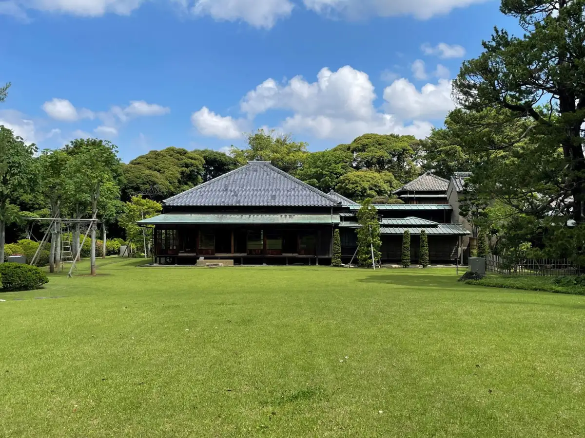
Stay
東横ＩＮＮ松戸駅東口

Toyoko INN Matsudo Eki Higashiguchi
Inn in Matsudo with breakfast available.
アーバンホテル東京 新松戸
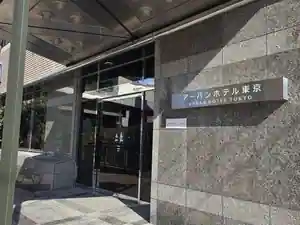
Aban Hotel Tokyo Shinmatsudo
ＲｅＬＡ東松戸
ReLA Higashi Matsudo
Inn in Higashimatsudo, Matsudo with long stays.
Dining
中華蕎麦 とみ田
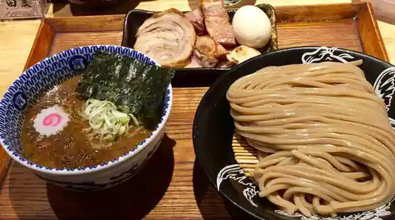
Chuka Soba Tomi Ta
中華蕎麦 柳
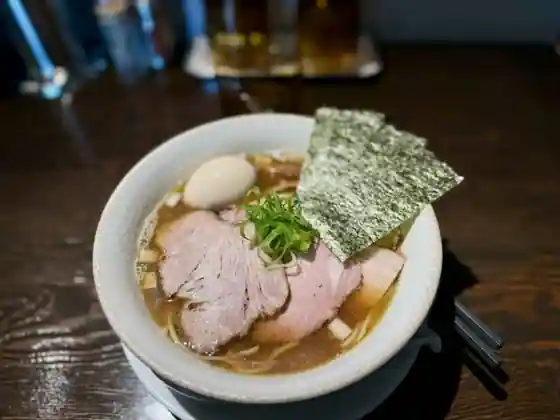
Chuka Soba Yanagi
バックシュトゥーベ ツオップ
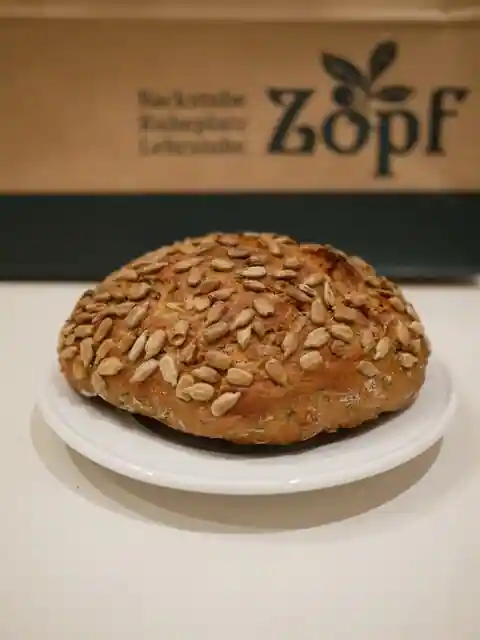
Bakkushutoube Tsuoppu
兎に角 松戸本店
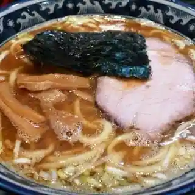
Tonikaku Matsudo Hon
とら食堂 松戸分店
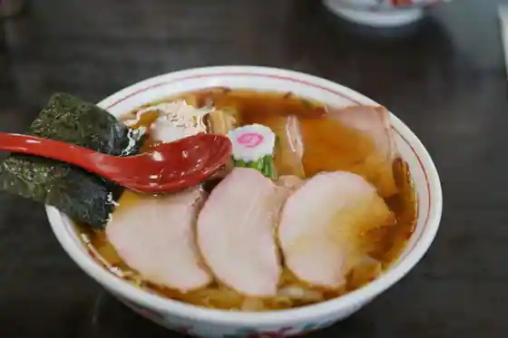
Tora Shokudo Matsudo Fun
松戸中華そば 富田食堂
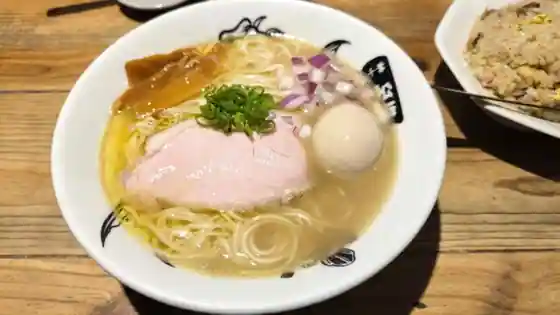
Matsudo Chuka Soba Tomita Shokudo
中華そば まるき
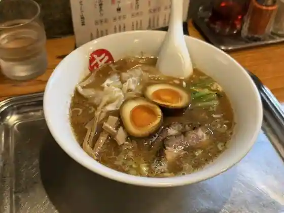
Chuka Soba Maruki
味処 むさし野
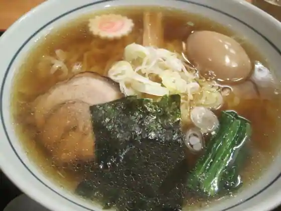
Ajidokoro Musashi No
R-S
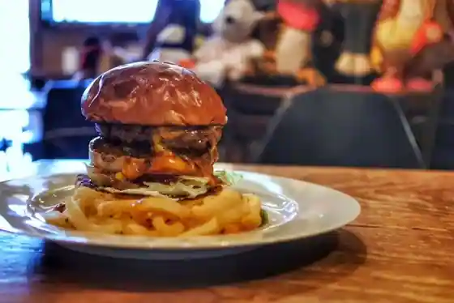
R-S
ラーメン二郎 松戸駅前店
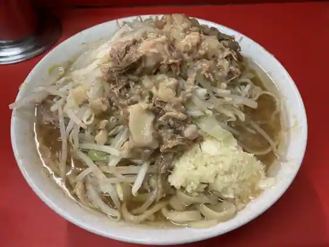
Ramen Jiro Matsudo Ekimae
とんかつ とみた
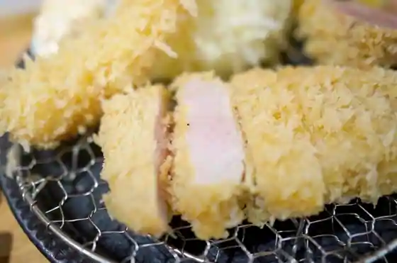
Tonkatsu Tomita
ら～麺 瑞藤
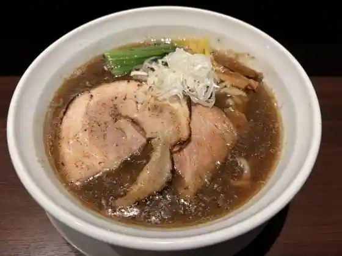
Ra ~ Men Zui Fuji
Curry House MUMBAI 松戸店
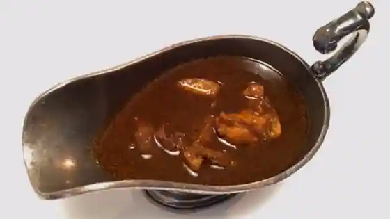
Curry House MUMBAI Matsudo
三つ由
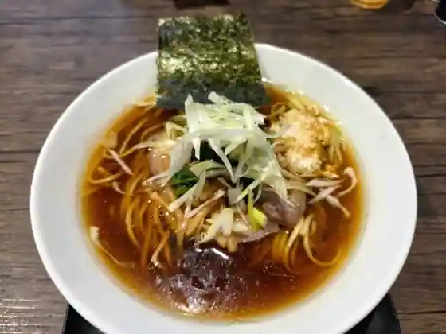
Mittsu Yu
博多長浜らーめん もりや
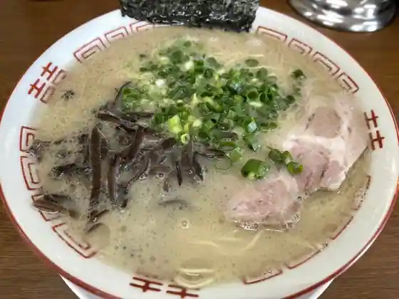
Hakata Nagahama Ramen Moriya
フライング ピッグ 松戸本店
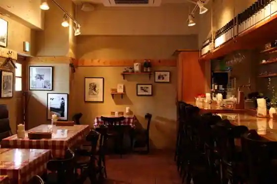
Furaingu Piggu Matsudo Hon
トラットリア イル レガーロ
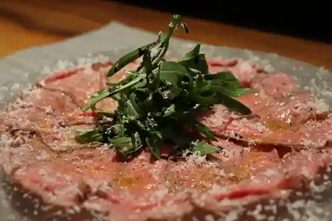
Trattoria Iru Regaro
ラーメン ニュー松戸
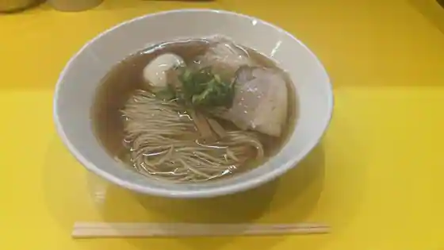
Ramen Nyu Matsudo
ばーがー時々洋食亭
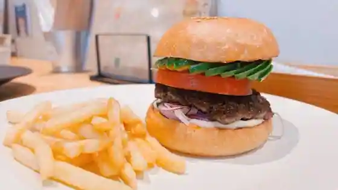
Baga Tokidoki Yoshoku Tei
雷 本店
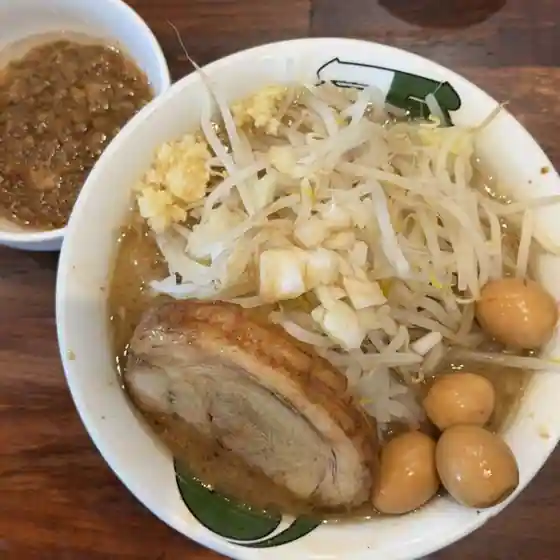
Kaminari Hon
大衆割烹 大黒 松戸本店
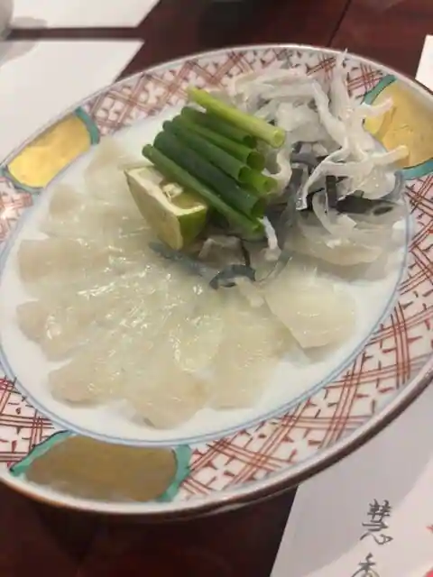
Taishu Kappo Daikoku Matsudo Hon
三味園
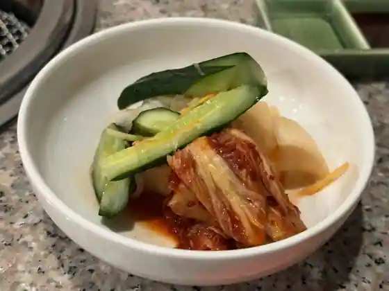
Shami Sono
らぁめん かじの葉
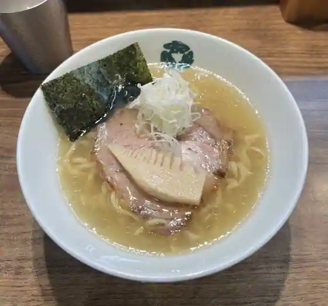
Ramen Kajino Ha
和欧食堂 CROPS 1991
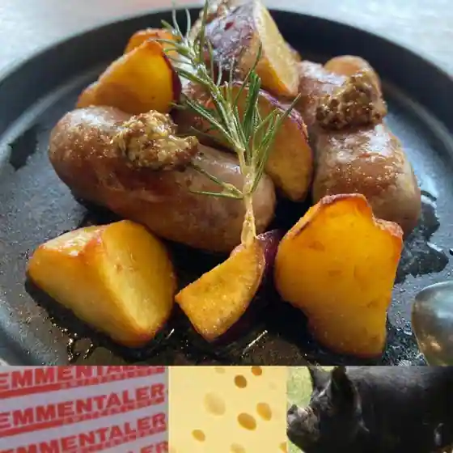
Wa O Shokudo CROPS 1991
Sights
Tojogaoka Rekishi Park (Tojo Tei Tojo Rekishikan)
Haseyama Hondo Tera
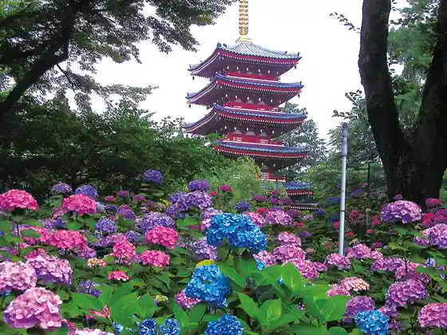
Yagiri no Watashi
Matsudo Ritsu Museum
Matsudo Nosambutsu Chokubai Tokoro
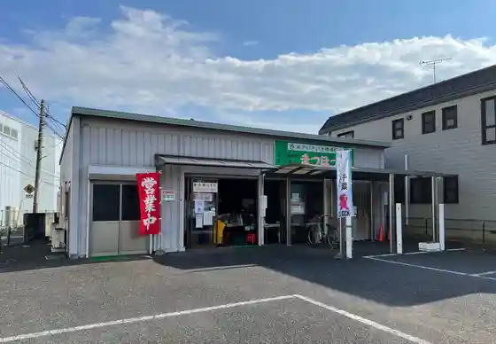
JA Tokatsu Chuo Chokubai Tokoro
Noma Jo Dote
Matsudo Shrine
Kisetsu no Hana (Hanashobu Ajisai) / Hondo Tera
Buppo Yama Tozen Tera
Ho Yama Manman Tera
Kamekichi Noen Bekkan